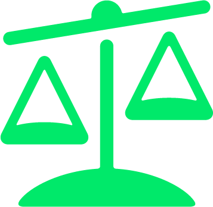
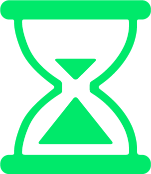

CrunchBase Viz
UX Research on startup fundraising | Data visualization of CrunchBase.
The Challenge
Making Fundraising Easier for Startups
The project was initially a qualitative research on startup fundraising. I've worked in Innovation Works, a VC firm targeting early technology startups, where I found that both fundraising and deal sourcing are difficult in some ways. Questions I wanted to explore include - What are the factors that will affect investment decision? What are the difficulties in startups' fundraising process? How to be fully prepared to get funding? At the end of research, I decided to design a visualization tool to leverage data for the use of investors as well as entrepreneurs.
Research
Interview, Observation & Focus Group
To fully understand startup fundraising process and answer the research questions, I conducted in-depth interview, observation and focus group. All the research are carefully planned and conducted, and I was amazed by the amount of data I could get from a objective view. I journaled all my thoughts after each research carried out, mainly reflecting on how I did and what I learned about the method.
Qualitative Research JournalIn-depth Interview
- Participant: CEO of a funded startup
- Duration: 1 hour
- Topics covered: Startup & Fundraising Experience, Emotional Journey
Remote Observation
- Participant: VC Investment Manager
- Duration: 45 min
- Activities Observed: Deal sourcing online, Meeting with Entrepreneurs
Focus Group
- Existing products or services are either too expensive, time consuming to navigate or not customiable.
- Most products are focusing on recipes.
Synthesize
Key Findings
I color coded all the transcripts from interview and focus group and observation notes. Then I cross referenced my teammate's transcripts and notes to come up with themes, and together we applied political framework to synthesized the theme and answered my research questions.
What are the factors that will affect investment decision?
- Investment decision is a two way choice based on trust.
- Factors investors consider - promising industry, distinctive and competitive product, reasonable business strategy, scale and valuation of the startup.
- Factors startups consider - investor's vision and value on product, investor's insight in the industry, investor's connections and resources.
What are the difficulties in startups' fundraising process?
- For software industry - Market is changing fast, and competition is fierce. For hardware industry - more demanding on time and money, investors doubt of the industry.
- Hard to get users at first due to lack of money for promotion
- Technology people having difficulties selling the product to investor. Finding a good business partner is hard.
 How to be fully prepared to get funding?
How to be fully prepared to get funding?
- Go to social events and activities to build connections and networking, to know as many people.
- Accumulate initial capital for early stage.
- Absorb knowledge and trend from online media in order to fully understand the industry and new trend.
- Pick a booming industry and make product distinctive.
- Team up with partners who can be relied on and who have faith in the product. Have both technology and business people in the team.
- Make them known to the public by getting media exposure and creating buzz